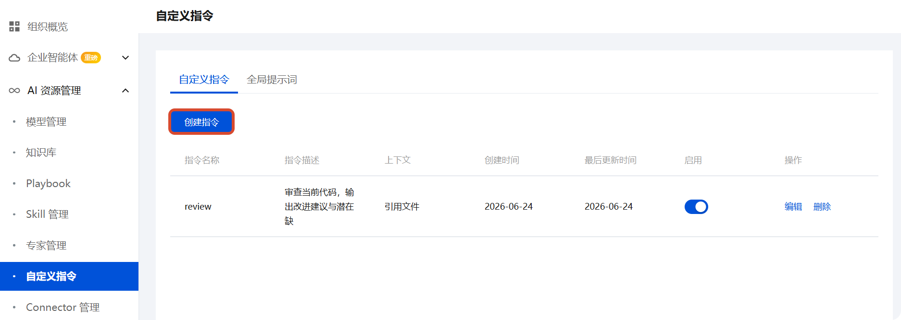
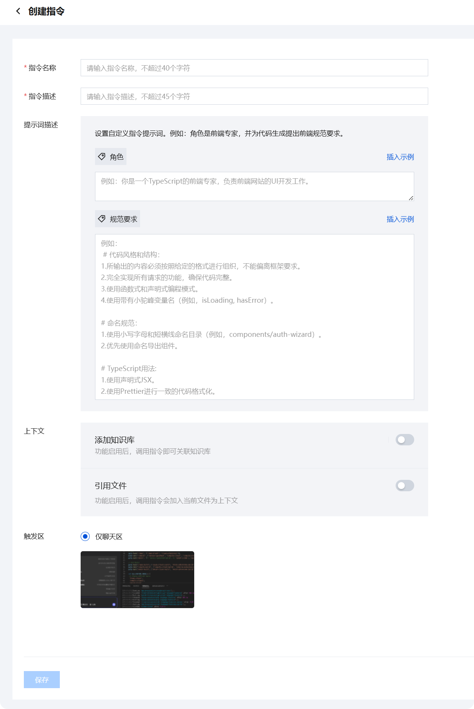
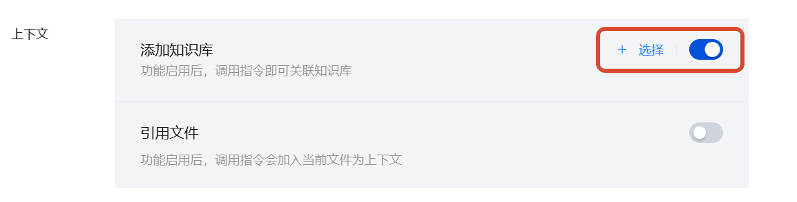
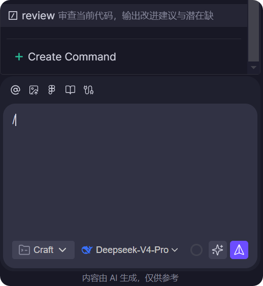
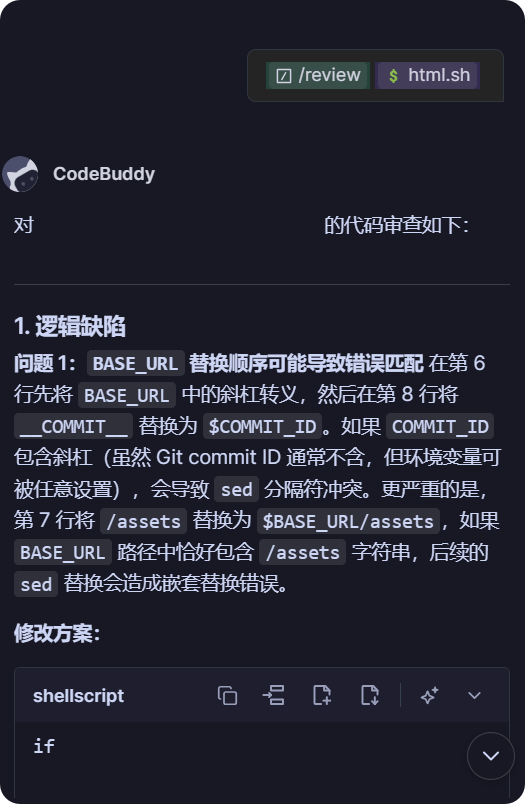

自定义指令
使用自定义指令扩展 CodeBuddy/WorkBuddy 在企业场景中的编码能力。自定义指令允许管理员为团队定义可复用的标准化提示词模板，在对话中通过 / 快捷调用。
自定义指令如何工作
显式调用
开发者客户端对话框中输入 / 触发指令选择器，从已启用的指令列表中选择目标指令。客户端加载对应的提示词描述和上下文配置，将其注入到当前对话中。
客户端采用渐进式加载策略优化上下文使用：
- 仅加载被选中指令的完整提示词和关联上下文。
- 指令名称和描述在触发器中展示，描述质量直接影响开发者的匹配效率。
注意
目前全局提示词不再对客户端生效，建议改用客户端的规则功能。
配置结构
每条自定义指令在管理后台以结构化配置保存：
- 指令名称（必需） — 开发者通过
/看到的标识符，建议使用简洁英文或中文短词。 - 指令描述（必需） — 展示在指令选择器中的简短说明，帮助团队成员理解指令用途。
- 提示词描述（必需） — 指令的核心 Prompt 内容，定义 AI 响应时的行为、输出格式与约束。
- 上下文配置（可选） — 包含知识库关联与引用文件两个子选项。
创建自定义指令
在企业管理后台创建自定义指令：
登录企业管理后台
在左侧导航栏中选择自定义指令，进入指令面板后单击创建指令

- 在创建页面填写以下配置：
| 字段 | 说明 | 必需 |
|---|---|---|
| 指令名称 | 在对话中以 / 触发的标识符 | 是 |
| 指令描述 | 指令选择器中的简述 | 是 |
| 提示词描述 | 客户端响应的核心行为定义 | 是 |
| 上下文 | 知识库和引用文件配置 | 否 |
- 单击保存。返回指令面板确认该指令已启用（默认开启）

配置知识库
在上下文中开启添加知识库选项后，调用该指令时自动关联所选知识库以增强生成质量。
- 勾选添加知识库以启用功能
- 单击 + 选择 添加知识库，从官方知识库和自定义知识库中选取

说明
如需创建自定义知识库，请参见知识库管理。
配置引用文件
开启引用文件选项后，调用该指令时自动关联当前工程文件作为上下文。
调用自定义指令
- 在对话框输入
/，从指令列表中选择目标指令。

- 按提示输入补充信息后发送，客户端根据指令配置生成响应。
提示
如果 / 列表中未出现已创建的指令，请重启 IDE 或确认当前处于企业组织下。
调用示例
以下示例展示一条自定义指令从创建到调用的完整流程。
场景：创建代码审查指令
指令配置：
| 字段 | 内容 |
|---|---|
| 指令名称 | review |
| 指令描述 | 审查当前代码，输出改进建议与潜在缺陷 |
| 提示词描述 | 你是一名资深代码审查员。请审查当前文件的代码，按以下维度输出：1.逻辑缺陷 2.性能问题 3. 安全风险 4. 可读性改进。每条建议附带修改方案。 |
| 知识库 | 未关联 |
| 引用文件 | 已开启 |

注意事项与重点提示
信息收集与使用
| 收集项 | 类型 | 用途 |
|---|---|---|
| 企业账号信息（登录凭据） | 必要 | 登录企业管理后台，创建和管理自定义指令 |
| 提示词描述（Prompt 内容） | 必要 | 定义客户端响应时的行为规则、输出格式和约束条件 |
| 指令描述（简述文字） | 必要 | 展示在指令选择器中，帮助成员理解指令用途和匹配目标 |
| 关联知识库内容 | 非必要 | 仅在管理员主动为指令配置知识库上下文时，增强客户端回答的领域准确性 |
| 引用文件上下文（当前工程文件） | 非必要 | 仅在对指令开启「引用文件」选项后，调用时将当前工程文件作为上下文注入 |
类型判定标准：
- 「必要」：创建自定义指令时必须填写的配置信息（如指令名称、提示词描述、指令描述）
- 「非必要」：管理员可选择开启的增强功能所涉及的数据（如关联知识库、引用工程文件）
权限边界
- 自定义指令在企业组织内共享，同一企业下的所有成员均可通过
/调用已启用的指令 - 指令不绑定成员权限策略，管理员通过启用/关闭控制指令的可用性
- 关联知识库后，指令调用的检索范围受知识库自身的可见范围限制
安全提示
- 提示词描述中请勿硬编码敏感凭据（如 API Key、Token、密码），客户端会将此内容注入模型上下文
- 指令名称建议使用语义明确的标识符（如
review、deploy），避免与系统内置指令或客户端规则冲突 - 已创建但不再使用的指令建议及时关闭或删除，减少指令选择器中的干扰项
- 开启「引用文件」选项后，调用指令时会将当前工程文件内容作为上下文发送，请注意工程文件的敏感信息暴露风险
积分消耗提醒
自定义指令的创建和管理不消耗积分；成员在对话中通过 / 调用指令时，根据指令绑定的上下文量（知识库检索、文件引用）和任务复杂度消耗相应积分。
第三方共享
- 自定义指令的提示词描述和上下文配置由企业管理员定义，不主动共享给平台外第三方
- 关联的知识库内容归属企业自身管理，遵循知识库的数据管理策略
- 指令调用过程中产生的对话数据由客户端维护，用于生成响应
免责声明
- 自定义指令的提示词质量由企业管理员负责，指令输出内容的准确性和合规性取决于 Prompt 设计质量
- 指令关联的知识库内容的准确性和时效性由对应知识库的上传者负责
- 客户端基于指令生成的回答仅供参考，关键决策请结合实际业务情况人工验证
使用建议
- 指令名称是成员在
/列表中发现和识别的第一入口，建议使用简洁英文或中文短词（如review、ci-check、发版检查），避免过长或含义模糊 - 为指令关联知识库可显著提升领域特定场景的回答质量，建议在创建与内部规范、技术文档、业务规则相关的指令时关联对应的自定义知识库
- 如果成员反馈
/列表中未出现已创建的指令，请提示他们重启客户端或确认当前处于正确的企业组织下